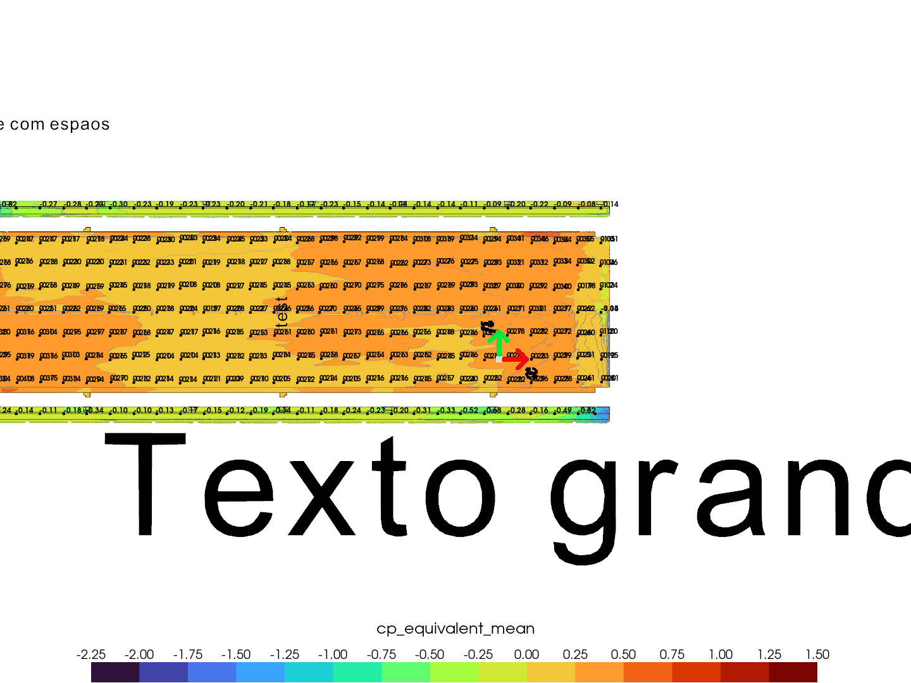
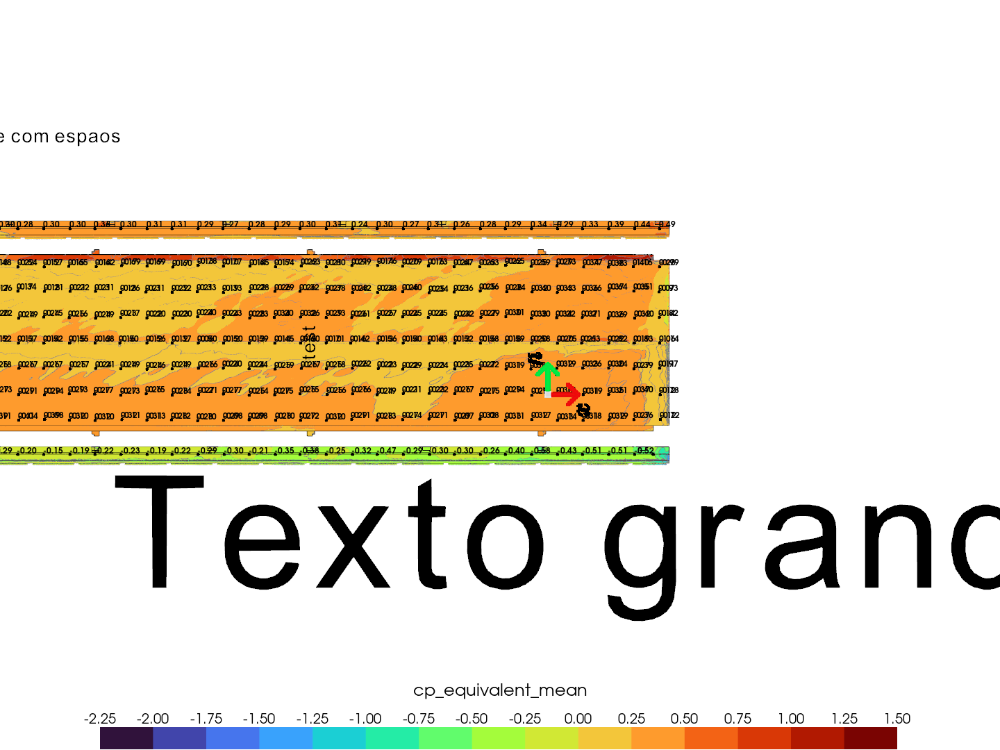

Snapshot from .vtp#
[1]:
import pathlib
import warnings
from cfdmod.snapshot.config import (
ImageConfig,
LegendConfig,
ProjectionConfig,
SnapshotConfig,
ValueTagsConfig,
)
from cfdmod.snapshot.snapshot import take_snapshot
from cfdmod.utils import create_folder_path
[2]:
# to run on remote Linux environment:
from xvfbwrapper import Xvfb
# Start virtual display
vdisplay = Xvfb(width=2874, height=1634, colordepth=24)
vdisplay.start()
edit:
define the paths
[3]:
repo_path = pathlib.Path("/home/ubuntu/users/aron/repos/cfdmod")
files_path = repo_path / "fixtures/tests/snapshot"
output_path = pathlib.Path("./output/images")
snapshot_config_path = files_path / "snapshot_params_example.yaml"
create_folder_path(output_path)
wind_dirs: a list of strings that represents wind directions, used to create the path to each projection in each image
images: configuration to generate images
name: name that represents the image
legend_config: configuration of the label in the image
projections: a set of key value pair of projections names and partial projection config (only the part thats differs in each projection)
[4]:
wind_dirs = [angle for angle in range(0, 60, 30)]
images = [
ImageConfig(
name=f"{wind_dir:03}",
legend_config=LegendConfig(label="cp_equivalent_mean", range=[-2.25, 1.5], n_divs=15),
projections={
"top_projection": ProjectionConfig(
file_path=files_path / f"{wind_dir:03}.vtp",
scalar="min",
values_tag_config=ValueTagsConfig(spacing=25, padding=(5, 10)),
),
"front_projection": ProjectionConfig(
file_path=files_path / f"{wind_dir:03}.vtp",
scalar=f"{'max' if wind_dir > 270 or wind_dir < 90 else 'min'}",
values_tag_config=ValueTagsConfig(spacing=25, padding=(5, 10)),
),
"back_projection": ProjectionConfig(
file_path=files_path / f"{wind_dir:03}.vtp",
scalar=f"{'max' if wind_dir > 90 and wind_dir < 270 else 'min'}",
values_tag_config=ValueTagsConfig(spacing=25, padding=(5, 10)),
),
"right_projection": ProjectionConfig(
file_path=files_path / f"{wind_dir:03}.vtp",
scalar=f"{'max' if wind_dir > 180 and wind_dir < 360 else 'min'}",
values_tag_config=ValueTagsConfig(spacing=25, padding=(5, 10)),
),
"left_projection": ProjectionConfig(
file_path=files_path / f"{wind_dir:03}.vtp",
scalar=f"{'max' if wind_dir > 0 and wind_dir < 180 else 'min'}",
values_tag_config=ValueTagsConfig(spacing=25, padding=(5, 10)),
),
},
)
for wind_dir in wind_dirs
]
execute:
a base snapshot configuration is created using an YAML file. Each image configuration subscribes some parts, creating the final configuration for the image.
For each image configuration, the snapshot base configuration will be modified according to the settings for the respective image.
[5]:
snapshot_config = SnapshotConfig.from_file(snapshot_config_path)
for image in images:
for projection_key in image.projections:
snapshot_config.projections[projection_key].file_path = image.projections[
projection_key
].file_path
snapshot_config.projections[projection_key].scalar = image.projections[
projection_key
].scalar
snapshot_config.projections[projection_key].values_tag_config = image.projections[
projection_key
].values_tag_config
snapshot_config.legend_config = image.legend_config
with warnings.catch_warnings():
warnings.simplefilter("ignore")
take_snapshot(output_path / f"{image.name}.png", snapshot_config)
image_path=PosixPath('../../../../fixtures/tests/snapshot/axis_icon.png') position=(1000.0, 500.0) angle=-90.0 scale=1.5 transparency=0.0
<PIL.PngImagePlugin.PngImageFile image mode=RGBA size=63x72 at 0x78695459EA50>

image_path=PosixPath('../../../../fixtures/tests/snapshot/axis_icon.png') position=(1000.0, 500.0) angle=-90.0 scale=1.5 transparency=0.0
<PIL.PngImagePlugin.PngImageFile image mode=RGBA size=63x72 at 0x78694428F150>
